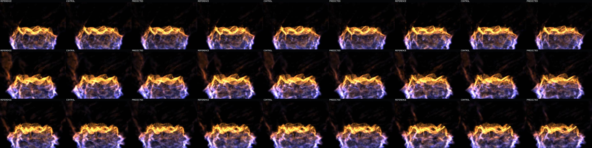
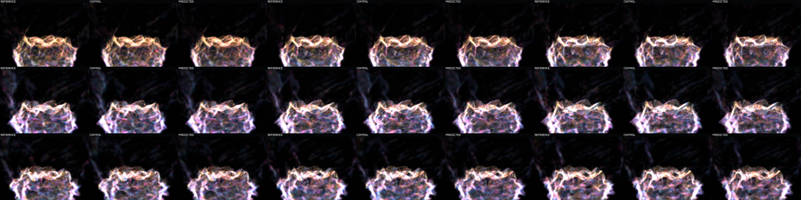

Question: Before recurrence feeds prediction error back into occupancy, does the frozen state head visibly recover the next exact held-out state better than carrying its local donor unchanged?
Measured answer: yes on the evaluated state channels. Across all 63 adjacent pairs and every Q3/Q4/transport/birth cohort, normalized state MSE is 0.5796x copied donor.
Every frame: left = exact eligible target, middle = copied local-donor control, right = one-step learned prediction. This is a temporal sequence of separate adjacent one-step evaluations, not an autoregressive rollout.
Q1/Q2 static support is attenuated to 10% in every role so the trained motion-bearing state changes remain visible. Compare fine color, opacity, scale, and rotation structure between the copied middle and learned right against the exact left.
Same payloads and cadence; display-only colors are green Q1/Q2, yellow Q3, red Q4, blue transported, and magenta birth. The mix does not alter state or model input.
After cropping the 8-pixel role labels, predicted-to-reference sequence PSNR is 28.605 dB versus control-to-reference 27.462 dB in beauty (+1.143 dB). Debug is 29.447 dB versus 28.216 dB (+1.230 dB).
This is a measurable advantage under this isolated raster. It is not analytical-raymarch agreement. Visually, the learned role remains close to control but more often recovers exact upper-sheet warmth, contour, and interior detail.
This is one ordered contact sheet, not five unrelated alternatives. Top row contains chronological frames 0, 1, 2; middle row frames 30, 31, 32; bottom row frames 60, 61, 62. Within every tile: left = reference, middle = copied control, right = prediction.

Identical chronology and role layout under the additive display-only 0.625 cohort mix. Use this sheet to distinguish Q3/Q4, transported, and birth-state differences from beauty-color ambiguity.

All roles share 4,016,659 cumulative eligible target sites. Unsupported births are excluded from all three roles (361,980 cumulative rows), so missing donor authority cannot be mistaken for learned state error. Copied Q1/Q2 rows remain donor state; learned residuals are applied only to the trained Q3/Q4/transport/birth population.
This witness establishes isolated one-step visual behavior on exact held-out support with valid local donor assignment. It does not establish stable recurrence, full-frame analytical-raymarch agreement, unsupported-birth synthesis, multi-basin generalization, nonstutter runtime motion, or runtime integration. Operator visual acceptance remains pending.